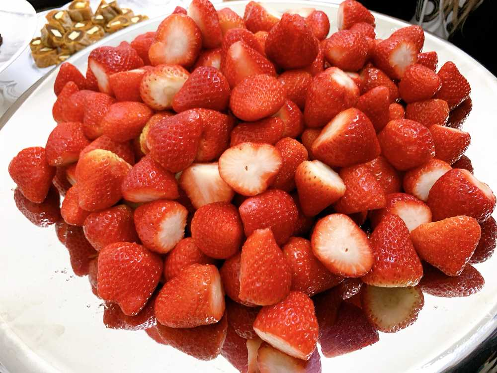

見てみて😳
ひいだよ🍓

いちご〜🥺🥺🥺🥺🥺🥺🥺🥺
大きくてすごく美味しかった🍓
メロンもあったよ🍈
朝に食べるフルーツは
やっぱり美味しいですね😇
フルーツは見てるだけでも
幸せになれる🤤
韓国は昨日の夜ぐらいから
雨が降ったり止んだり。。
ちょっと湿気でじめっとしてます😦
이호のところの天気はどうですか？？
私は雨にビビって今日は寒いと思い
ペディンを着てきました😺
雨降ったあとって寒いから😵
ペディンしまっておいたのに
急遽今朝引っ張り出してきた💨
寒さ＝大敵🤜🏻💥🤛🏻
じゃあ少し質問答えます💡
Q. 靴下は右足から？左足から？
A.特に意識したことないけど
考えてみたら右からかも🤔🤔
Q. メンバーからもらって嬉しかったものは？
A. チェヨンオンニが私の誕生日のときに
お洋服をくれたの👗
すごく嬉しかったなあ🥺
薄めの生地だったから
そろそろ着られる季節だ😚
ではまたっ
딸기....🥺🍓
너무 달고 크고 맛있었어요ㅠ
멜론도 있었어요🍈
오늘은 뭔가 날씨가 좋지 않네요...
습기가 많은 느낌...??
비가 와서 그런지...
비가 온 다음날은 춥잖아요???
그래서 오늘은 또 패딩을 꺼내서 입었어요ㅎㅎㅎ
따뜻하게 입어야지!!!
그리고 어제 커피를 적당히 마셔야겠다고 했잖아요?
근데... 아침도 마셔버렸지~롱😛
눈 앞에 바로 커피머신이 있으니까
참을 수 없었습니다🙂🙃🙂
오늘은 많이 마실거야...ㅎㅎㅎㅎ
또 질문 생기면 알려주세요😉ㅎㅎㅎ
かまぼこ食べたときの🤳
去年の写真だけどすっかり忘れてた😅
ばいばーい👋🏻
ひいまる🥟